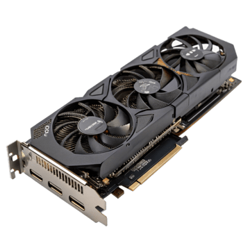

Il sito è realizzato puramente a scopo didattico; l'aggiunta di più componenti rende il codice più lungo ma non più complesso.
Le CPU e GPU aggiunte sono state scelte in modo casuale fra quelle più utilizzate nelle custom build, da un'entry level a una top level.
I videogiochi, come le componenti, sono stati selezionati in modo da partire da uno che abbia requisiti minimi fino ad arrivare ad uno che abbia requisiti alti.


(Passa con il cursore sopra le componenti per capire cosa sono)